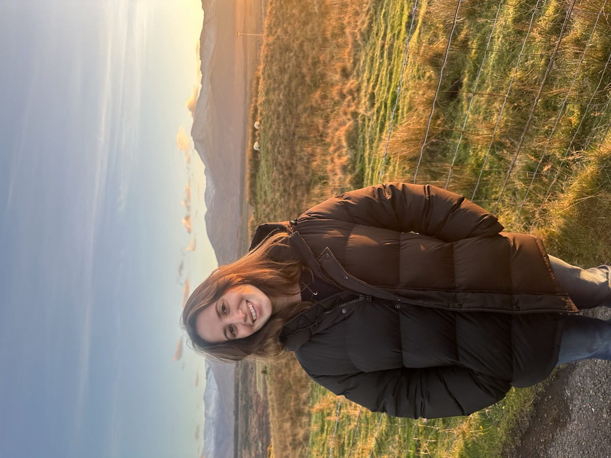
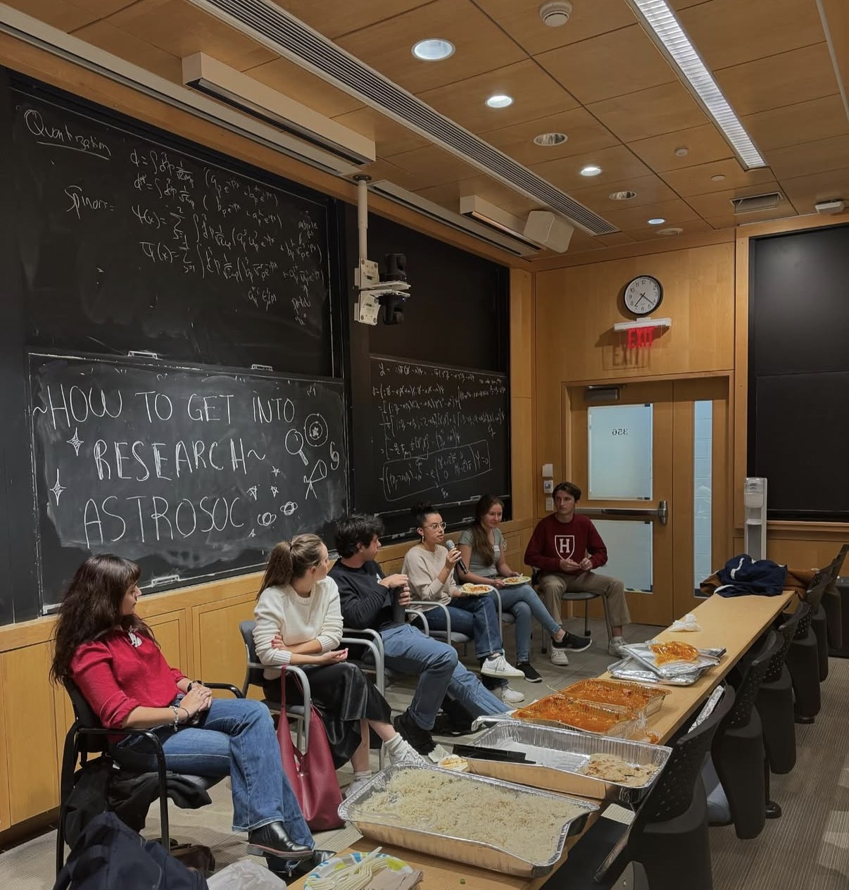
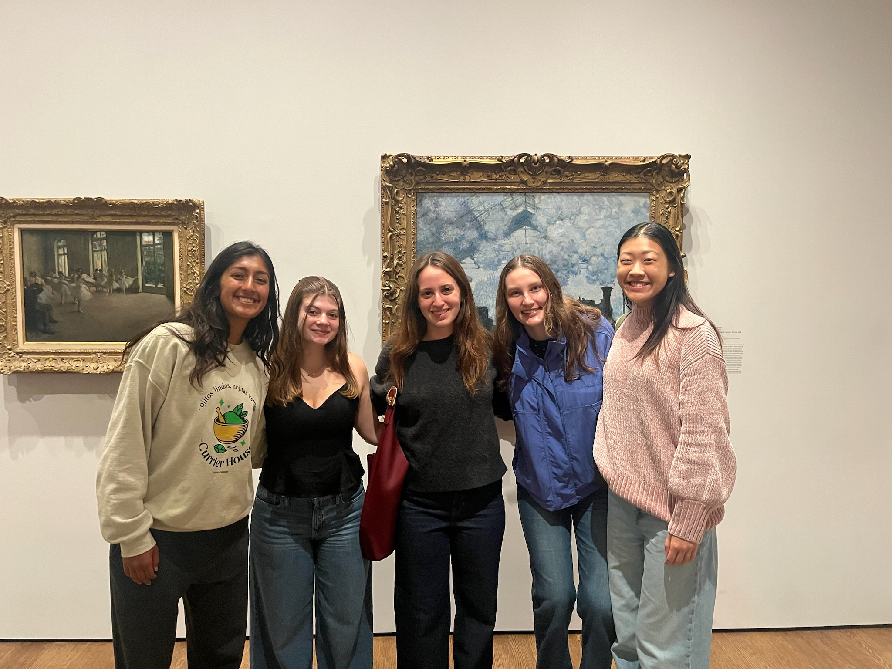
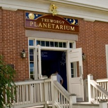

Arielle Frommer
Yale Astronomy PhD Student, NSF GRFP and Gruber Science Fellow
Welcome to my website! My name is Arielle Frommer and I'm an astronomy graduate student and science journalist. My research focuses on planets orbiting stars outside the solar system, and I've written about astronomy news for Sky & Telescope and Scientific American. You can reach me at arielle.frommer@yale.edu — I'd love to chat!
Hello! I’m an Astronomy PhD student at Yale University and an NSF GRFP and Yale Gruber Science Fellow. I am interested in exoplanet atmospheres, demographics, and applying machine learning and computational techniques to study them!

I hope to answer key questions regarding how planets form, why they vary across different systems, and whether any could host life. I obtained my BA in Astrophysics and Physics from Harvard University in May 2025, graduating cum laude with highest honors from the Astronomy department. After graduating, I spent eight months studying exoplanet atmospheres at Leiden University in the Netherlands, funded by Harvard's Alex G. Booth Fellowship.
Beyond research, I am also passionate about science communication and outreach! I've written dozens of articles for the astronomy magazine Sky & Telescope, created educational tours on art and astronomy as a student guide at the Harvard Art Museums, and led tours of the night sky as a volunteer at Mystic Seaport's Treworgy Planetarium.
I'm originally from New London, Connecticut, and in my free time, I like hiking, crocheting, going to art museums, solving NYT cross puzzles, dancing, and reading and writing fiction!
Planetary atmospheres are a window into a planet's composition and formation history. Specifically, the ratio between different isotopes can probe the age and formation pathways of different planets, brown dwarfs, and stars. Obtaining this measurement for a hot Jupiter, a rare type of planet with several speculated formation pathways, would be interesting and may shed light on its formation history. This measurement has not yet been constrained due to challenges with low signal-to-noise.
Working with Professor Ignas Snellen at Leiden Observatory, I aimed to measure this ratio between carbon monoxide with carbon-12 vs. carbon-13 (12CO/13CO) for the hot Jupiter WASP-39b. While we robustly confirmed the presence of 13CO in WASP-39b's atmosphere, the first for a hot Jupiter, we could not constrain the exact ratio with certainty. We also found that noise can bias our measurements to find more 13CO than is present. I presented this work in Leiden and at the Emerging Researchers in Exoplanet Science (ERES) XI conference, and I am preparing a first-author paper to be submitted to Astronomy & Astrophysics!
The Transiting Exoplanet Survey Satellite (TESS) has revolutionized our understanding of planetary systems by finding hundreds of exoplanets, allowing us to draw conclusions about their formation, evolution, and population demographics. TESS searches for exoplanets via the transit method — periodic dimmings of light when a planet passes in front of its host star. TESS currently applies the Pre-search Data Conditioning (PDC) algorithm to correct for systematic noise, originating from known and unknown causes. While PDC noise correction relies on linear feature extraction, non-linear machine learning techniques could provide a more sophisticated and flexible noise correction, enabling us to extract stronger signals and detect more planets.
Advised by Dr. Jason Eastman and Professor Andrew Vanderburg, I investigated the possibility of using an autoencoder to extract and remove systematics for my Harvard senior thesis. The autoencoder utilizes a non-linear neural network to reconstruct data based on systematic features (i.e. the noise), while ignoring unique transit signals that we aim to preserve. However, my first batch of noise-corrected light curves had modified transits — indicating that the autoencoder is learning to reconstruct specific astrophysical signals in addition to systematics — and I am currently refining the autoencoder pipeline to only preserve systematics. If our autoencoder improves the systematic error floor while preserving transits, it could improve our measurement precision of existing planets and enable the detection of new worlds.
In the search for planets transiting other stars, false positive candidates like binary star systems can slip through the cracks. Detecting and ruling out these false positives is crucial to improving our understanding of exoplanet populations. When I set out to model the TESS candidate TOI-568 for my Harvard junior thesis, we quickly suspected that it was a binary star system instead due to the V-shaped transit. But when we obtained photometry showing two widely-separated stars, we realized instead that we had a triple star system on our hands.
Working with Dr. Jason Eastman and incorporating direct imaging, transit data, and photometry, I characterized the system using the planetary modeling tool EXOFASTv2, finding that the system contains two massive A-type stars, one of which was on a polar orbit, and a third G-star orbiting one of the A-stars. We introduced several new capabilities within EXOFASTv2 to properly model this complex triple-star system, which can now be applied to multi-star and multi-planet systems. Our successful modeling demonstrates a new paradigm for identifying false positives, in which we utilize multiple data sources and rigorous modeling to definitively characterize a system, and I've submitted a first-author paper to The Astronomical Journal.
Science is made more meaningful when shared, inspiring curiosity and deeper questions. I hope to use my voice to communicate why our research is important, generate more enthusiasm for science, and shed light on new ideas! I've written for Sky & Telescope and Scientific American, and got my start at The Harvard Crimson, my college newspaper. Here are some of my favorite clips:
I also penned a 3,000-word feature on ocean worlds for Sky & Telescope's print magazine in their May 2026 issue, and I'm writing a new feature for 2027. I'm always on the hunt for new stories to write! If you're an astronomer looking to share an exciting discovery, or an outlet looking for someone to cover a story, I would love to connect.

AstroSoc panel on research

Friends at my tour
I’ve also been involved in community outreach! At Harvard, I led the Undergraduate Astronomy Society (AstroSoc) as Co-President, organizing biweekly dinners, mentorship programs, informative panels, and outreach to foster community for undergraduates in the astronomy department.
As a Ho Family Student Guide at the Harvard Art Museums, I designed and gave original, research-based tours on art and astronomy and art and poetry. My art and astronomy tour in particular was an amazing opportunity to make science and art more accessible and explore how the disciplines intersect in their endeavors to make sense of our world. I also contributed an essay to “A Collection of Perspectives: Ho Family Student Guides at the Harvard Art Museums,” a series of student guide essays published by the Harvard Art Museums, which can be found here.
Leiden’s Pieterskerk, which houses the Pilgrim museum
In the Netherlands, I volunteered with Leiden’s Astronomy on Tap, an outreach initiative which organizes monthly public talks at local astronomy bars, making science more accessible to the public. I co-ran the program’s social media and newsletter while in Leiden. As a lover of museums, I also sought out an opportunity to volunteer for the Leiden Pilgrim Museum, which highlights the Pilgrims’ 12-year stay in Leiden before they journeyed on to the New World. As a museum docent, I greeted visitors and answered questions about the collection.

Treworgy Planetarium
I’ve also volunteered with the Mystic Seaport Treworgy Planetarium in Mystic, CT, an amazing live planetarium with a 65-year-old star projector and numerous educational programs. As a volunteer, I led a 30-minute live planetarium show on the current night sky in our backyard, delivering 2-4 shows a week. I’m currently on leave as I start my PhD in New Haven, but hope to rejoin them when I can!
My CV can be downloaded here. Updated August 2026.